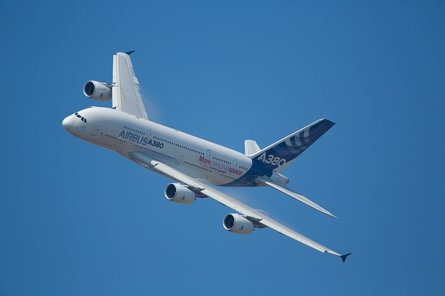
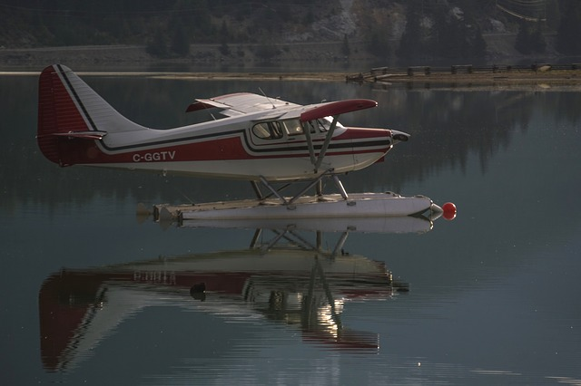
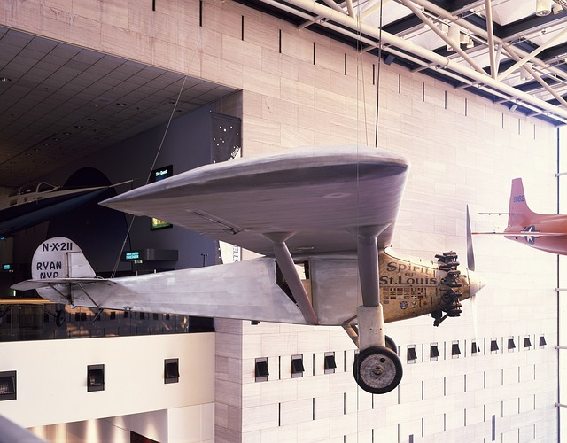
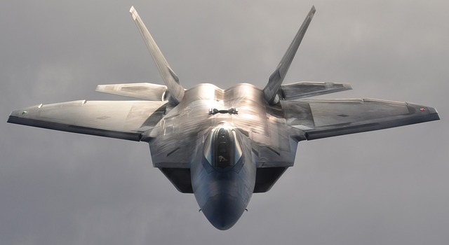
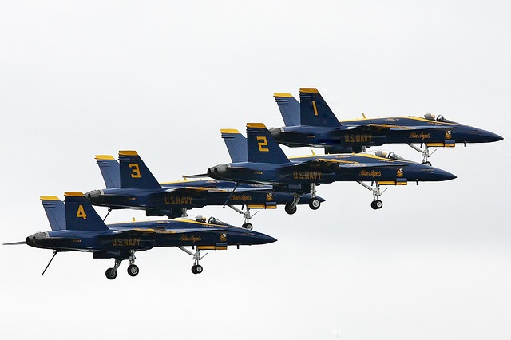
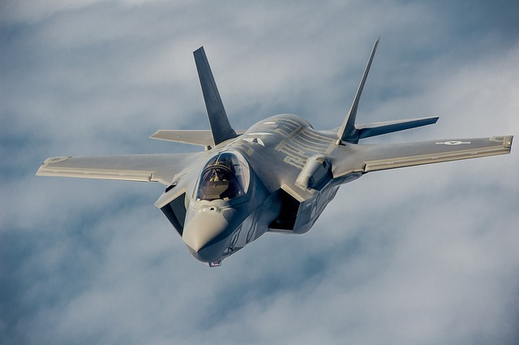

Aircraft and More
Toggle navigation
Home
Gallery
Feedback
Click below to learn more about the following airplanes.






×
Airbus A380
×
Seaplane
×
Spirit of St. Louis
×
F-22A Raptor
×
The Blue Angels
×
F-35 Lightning II